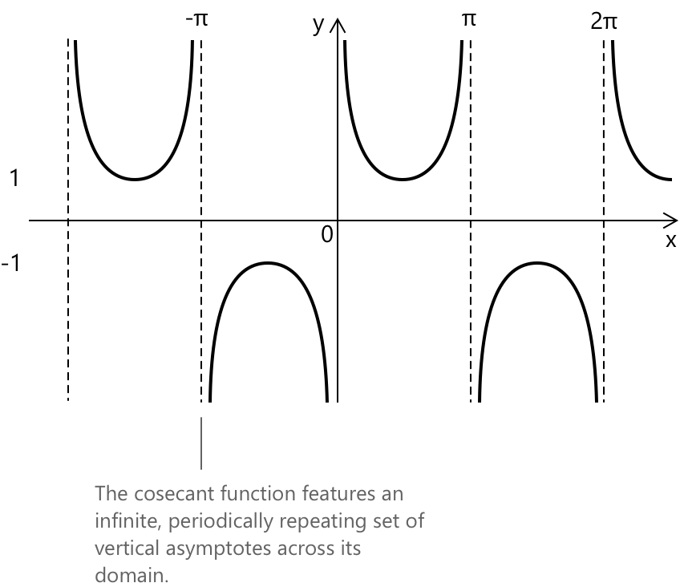

Функція косеканса
Функція косеканс
Функція косеканс \(f(x) = \csc(x)\) визначається як обернена до функції синус. Для будь-якого дійсного кута \(x\) (виміряного в радіанах), косеканс набуває значення:
\[ \csc(x) = \frac{1}{\sin(x)} \]
за умови, що \(\sin(x) \neq 0\). Через таку обернену структуру поведінка функції косеканс повністю визначається властивостями функції синус.
Цей розділ присвячений аналітичним властивостям функції косеканс. Для геометричної інтерпретації на основі одиничного кола, включаючи те, як косеканс виникає з продовження радіуса та відповідної побудови прямокутного трикутника, див. спеціальний розділ.
Її графік є періодичною кривою з періодом \(2\pi\). Оскільки функція синус досягає нуля в ізольованих і рівномірно розташованих точках, функція косеканс має вертикальні асимптоти в точках:
\[ x = k\pi \qquad k \in \mathbb{Z} \]
де обернена величина \(1/\sin(x)\) стає невизначеною.

Ці асимптоти поділяють графік на окремі гілки, кожна з яких необмежено зростає або спадає, коли кут наближається до цих точок. Область визначення \(\csc(x)\) включає всі дійсні числа, крім кутів, де \(\sin(x) = 0\). Її область значень складається з двох необмежених проміжків \((-\infty, -1] \cup [1, \infty)\), що відображає той факт, що функція синус ніколи не перевищує 1 за абсолютним значенням, тому її обернена величина завжди повинна мати модуль принаймні 1.
Ключові властивості
- Область визначення: \( { x \in \mathbb{R} : \sin(x) \neq 0 } = { x \in \mathbb{R} : x \neq k\pi \text{ для всіх } k \in \mathbb{Z} } .\)
- Область значень: \( y \in (-\infty, -1] \cup [1, \infty) .\)
- Періодичність: періодична за \( x \) з періодом \( 2\pi .\)
- Парність: непарна, \( \csc(-x) = -\csc(x) .\)
- Графік має вертикальні асимптоти в точках \( x = k\pi .\)
Додаткова тотожність
Корисний зв'язок існує між косекансом та котангенсом. Виходячи з піфагорової тотожності для синуса та косинуса і переписуючи все через синус, ми отримаємо:
\[ \csc^{2}(x) = 1 + \cot^{2}(x) \]
Ця тотожність підкреслює тісний зв'язок між двома функціями: коли модуль котангенса зростає, косеканс також збільшується, і обидві функції мають однакові вертикальні асимптоти. Це практичний зв'язок, який часто зустрічається в математичному аналізі, особливо при роботі з похідними, інтегралами або тригонометричними рівняннями, що містять обернені функції.
Границі, похідні та інтеграли косеканса
Кілька granic допомагають прояснити, як поводиться функція косеканса поблизу критичних точок її області визначення. Коли кут наближається до значень, де синус близький до одиниці, косеканс залишається обмеженим і наближається до скінченного значення. Коли кут наближається до тих точок, у яких синус прагне до нуля, обернена величина зростає без обмеження, що призводить до появи вертикальних асимптот, типових для цієї функції. Цю поведінку можна підсумувати наступними границями:
\[1. \quad \lim_{x \to 0^+} \csc(x) = +\infty\] \[2. \quad \lim_{x \to \pi/2} \csc(x) = 1\] \[3. \quad \lim_{x \to k\pi^-} \csc(x) = -\infty\] \[4. \quad \lim_{x \to k\pi^+} \csc(x) = +\infty\]
Функція косеканса є неперервною та диференційовною в кожній точці, де вона визначена, тобто на всій дійсній прямій, за винятком кутів, де функція синуса перетворюється в нуль. У цій області визначення вона змінюється плавно, а швидкість її зміни випливає з диференціювання оберненої величини до синуса. Застосування стандартних правил диференціювання дає:
\[ 5. \quad \frac{d}{dx}\csc(x) = -\csc(x)\cot(x) \]
що описує, як косеканс зростає або спадає залежно від комбінованої поведінки \(\csc(x)\) та \(\cot(x)\).
Первообраз функції косеканса може бути отриманий за допомогою класичної підстановки, яка переписує підінтегральний вираз у формі, приданій для логарифмічного інтегрування. Це призводить до компактного виразу, що включає як косеканс, так і котангенс. Отриманий невизначений інтеграл має вигляд:
\[ 6. \int \csc(x)\, dx = -\,\ln\!\left|\, \csc(x) + \cot(x) \,\right| + c \]
Комплексний огляд тригонометричних інтегралів, разом із найкориснішими методами перетворення та підстановки для обробки складніших випадків, доступний на сторінці про інтеграли тригонометричних функцій.
Інше аналітичне представлення \(\csc(x)\) можна отримати, виразивши синус в експоненціальній формі через тотожність Ейлера. Цей зв'язок часто є корисним у таких областях, як аналіз Фур'є та комплексне інтегрування. Використовуючи тотожність:
\[ 7. \quad \sin(x) = \frac{e^{ix} – e^{-ix}}{2i} \]
функцію косеканса можна записати як обернену до цього виразу, що дає:
\[ 8. \quad \csc(x) = \frac{2i}{\,e^{ix} – e^{-ix}\,} \]
Це формулювання підкреслює аналітичну структуру \(\csc(x)\) та пов'язує його тригонометричне означення з його комплексним експоненціальним представленням.